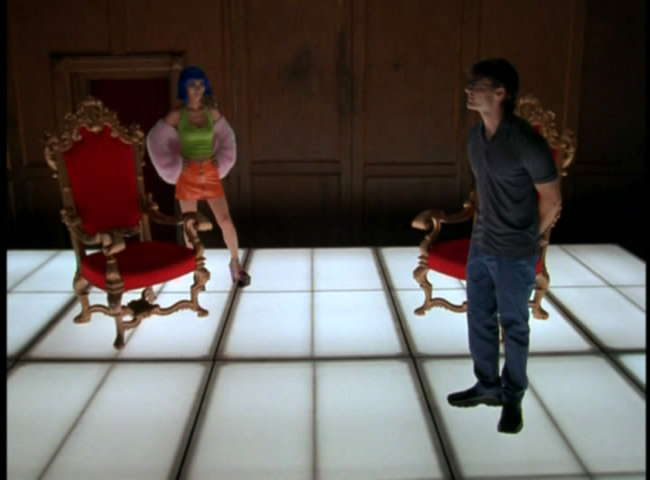
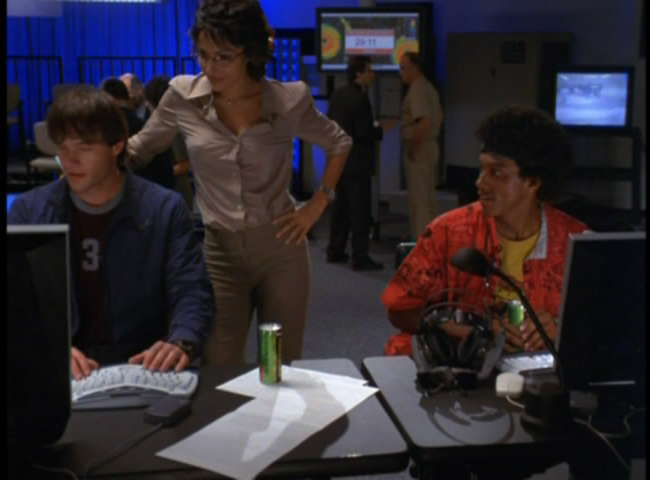
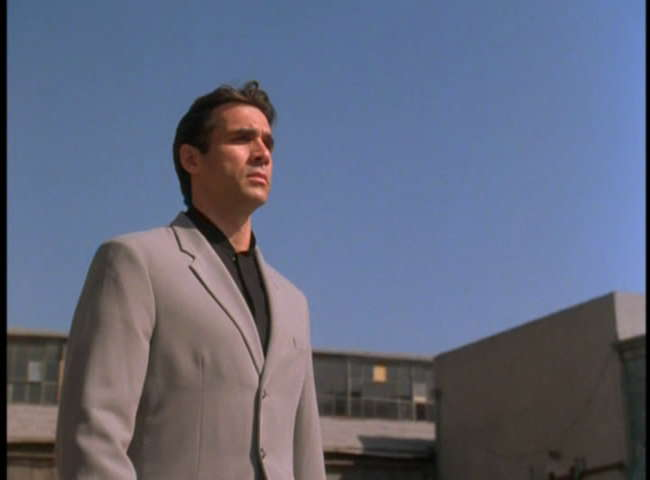

Movie review by : SFAM
Year : 2002
Directed by : Terry Cunningham
Written by : Flavia Carrozzi, Terry Cunningham & Steve Latshaw
Degree of Cyberpunk visuals : Low
Correlation to Cyberpunk themes : Medium
Rating : 5/10
Key cast members :

Overview: Overview: Codehunter (a.k.a. Storm Watch) is a fun, but absurd low budget AI and VR flick. This is not a movie who's technical plot holds together, but it does work as a bubble-gum current-setting hacker-cyberpunk romp. Code Hunter is another WarGames-Hacker-Colossus, the Forbin Project rip-off, but in a simplistic and enjoyable way. I'm a sucker for movies with either Bai Ling and Adrian Paul in it. Along with those two, the supporting cast which includes Babylon Five's Jerry Doyle, Vanessa Marcil and Nora Dunn is pretty fun too.

The Story: Nick "Jester" Chase (played by Nick Cornish) is a reformed hacker who likes to hang out in a VR first person shooter game called Shock. Simultaneously, a small computer firm is attempting to sell the US Navy on a new satellite system called "Thunderhead", which is designed to control the weather. Nick is contacted in the game by Skylar (Bai Ling), a computer genius extraordinaire, to steal a file from an unknown computer system. After refusing, Skylar blackmails Nick by modifying his record to make him a wanted fugitive. Skylar agrees to steal the file, but then hides it and tries to go to the news station to seek protection. He enlists the aid of up and coming reporter, Tess Woodward (Vanessa Marcil), who agrees to help him.

Unfortunately, Thunderhead appears to be out of control, and has created two massive hurricanes on each side of the US that will devastate the both coasts, causing potentially millions of deaths and billions in damages. The government tracks down Nick and bring him in for questioning. As the plot unfolds, it appears that a strange connection between the VR game "Shock" and Thunderhead emerges. Unless they can unravel it, the consequences will be catastrophic.
The Bottom Line: Although the cast is fun, and the pacing is good, the actual plot points and coherency are well past the point of believability. They are too numerous to count, but suffice to say the good guys had a number of obvious solutions that could have stopped the catastrophe. To add insult to injury, the movie overstretches its AI angle ? had it stopped earlier, it would have worked within the narrative, but instead, they go for the sappy "teach me all of humanity" angle. Again, the movie is fun to watch, but lacks any real intelligence.